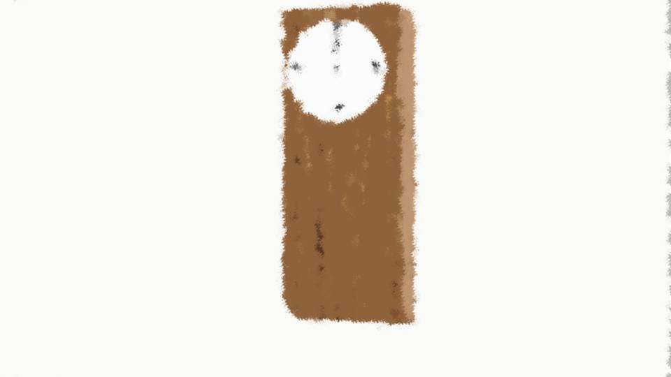

This scene is not unlocked yet in your progress
Inner Conflict

Goto and I had returned to the police station and, for several hours, kept waiting to see whether any information on Haruka would come in.
After that, the police had searched the surrounding area, but neither Haruka nor Obasan had been found.
According to Ise-san, no sign of entry into any floor partway down during the fall.
Right at the place thought to be the landing point, fresh footprints thought to have been left with great force.
The car owned by the Niimura family, missing as well.
In other words, apparently it was thought that they really had jumped from the 5th floor and fled by car.
According to Ise-san, no sign of entry into any floor partway down during the fall.
Right at the place thought to be the landing point, fresh footprints thought to have been left with great force.
The car owned by the Niimura family, missing as well.
In other words, apparently it was thought that they really had jumped from the 5th floor and fled by car.
But at first, jumping from the 5th floor was unthinkable, and in the beginning the search had concentrated on the area around the apartment building.
So putting a cordon around the whole Motoki-cho area had been delayed, and the car's whereabouts, unknown too.
On that part, Ise-san too regretted having made an error of judgment.
So putting a cordon around the whole Motoki-cho area had been delayed, and the car's whereabouts, unknown too.
On that part, Ise-san too regretted having made an error of judgment.
However, if you jumped off the roof of a five-story apartment building, there was no way you would come away unhurt.
At that moment, I remembered the spiriting-away theory of the Megasawa City case.
At that moment, I remembered the spiriting-away theory of the Megasawa City case.

"Kogori-senpai, I'm sure Niimura-senpai is safe."
"Yeah... there's no way Obasan would lay a hand on Haruka..."
"Yeah... there's no way Obasan would lay a hand on Haruka..."

Before long, April 8 would be over.
The anniversary of Haruka's dad's death... and, starting today, the anniversary of my dad's death as well.
The anniversary of Haruka's dad's death... and, starting today, the anniversary of my dad's death as well.
I closed my eyes, and put my hands together.
At the very least, just praying like this for the two of them to rest in peace...
What I can do before April 8 ends is only this much.
At the very least, just praying like this for the two of them to rest in peace...
What I can do before April 8 ends is only this much.

When I opened my eyes, Goto too had closed her eyes in the same way and put her hands together.
The time signal announcing midnight―
This sound, it's the same as the clock at Haruka's home...
But I'll never hear this sound at Haruka's home again.
The time signal announcing midnight―
This sound, it's the same as the clock at Haruka's home...
But I'll never hear this sound at Haruka's home again.
No, Haruka will surely come back.
Haruka will surely come back to me.
Haruka will surely come back to me.
"Senpai... that letter...?"
"Letter? What do you mean?"
"Senpai...!"
"I don't know anything. Goto, you too... you don't know anything, right...?"
About that letter, no one knew except me, Goto and Mom.
Maybe, it could turn out to be a clue to finding Haruka.
"Letter? What do you mean?"
"Senpai...!"
"I don't know anything. Goto, you too... you don't know anything, right...?"
About that letter, no one knew except me, Goto and Mom.
Maybe, it could turn out to be a clue to finding Haruka.
But apparently if that goes to the police, Haruka and I will both be erased from society. Yet that isn't what I'm afraid of.
If it were made public, I would lose even more people dear to me. That was the feeling I had.
If it were made public, I would lose even more people dear to me. That was the feeling I had.

Just then, someone dear to me, Mom, appeared.
"Natsumi... Goto-chan..."
Mom's face was even more haggard.
Held by the police for hours already, and on top of that, her best friend, Obasan, gone missing.
Mom's state of mind, too, was probably close to its limit by now.
"Natsumi... Goto-chan..."
Mom's face was even more haggard.
Held by the police for hours already, and on top of that, her best friend, Obasan, gone missing.
Mom's state of mind, too, was probably close to its limit by now.

"Obasan, are you all right? Just now, I was talking about the letter with Kogori-senpai."
"Goto...!"
"Goto...!"

"Your letter the other day, Senpai, it was fun! But the letters from me, please put them somewhere people won't find them!"
With that, Goto grinned.
Goto and I had never exchanged any letters. This was a blatant lie of Goto's.
With that, Goto grinned.
Goto and I had never exchanged any letters. This was a blatant lie of Goto's.
Hearing that, Mom's expression did not change.
"I'm just... going to get some air outside..."
"I'm just... going to get some air outside..."
Mom walked out of the police station with heavy steps.
When I turned my eyes to Goto, the smile from before was gone.
When I turned my eyes to Goto, the smile from before was gone.
I know why Goto said a thing like that.
That letter, Mom must have read it too.
So, Mom must know what lies behind this incident.
Mom knew something was going to happen, and yet, without even stopping it―
That letter, Mom must have read it too.
So, Mom must know what lies behind this incident.
Mom knew something was going to happen, and yet, without even stopping it―
Goto's lie just now is her greatest protest against Mom, and her anger.
Even so, Goto had shown me the utmost consideration.
Even so, Goto had shown me the utmost consideration.
"I'll forget about that letter too.
But the intent behind Obasan putting that letter away somewhere it could be found right away if anyone looked for it, you understand it, don't you...?"
At last, I understood.
At last, I understood.
I hadn't really understood the circumstances of Mom coming to the police station first, but so that was what it meant.
Mom, if anything happened, had meant to make that letter public.
Mom had already, by now, steeled herself for something.
Mom, if anything happened, had meant to make that letter public.
Mom had already, by now, steeled herself for something.
But for me and Haruka, she still hadn't made it public.
I don't know the reason yet, but if she's acting in such a contradictory way, Mom must be in considerable anguish, even now.
Goto saying something that rubbed that the wrong way means her anger at Mom must be considerable.
I don't know the reason yet, but if she's acting in such a contradictory way, Mom must be in considerable anguish, even now.
Goto saying something that rubbed that the wrong way means her anger at Mom must be considerable.
"Kogori-senpai... I'm sorry... To Obasan, something that awful...
But... I'll apologize, but I won't regret it."
"Goto..."
Goto, like Mom, was in anguish too.
Her anger at Mom, and her feelings for me, must be clashing violently inside Goto.
"Goto..."
Goto, like Mom, was in anguish too.
Her anger at Mom, and her feelings for me, must be clashing violently inside Goto.
"Mom, what's going to happen to her..."
"At best, turning herself in. In the worst case―"
"All right, you don't have to say any more."
What is this...!
Turning herself in, what does that mean! The worst case, what does that mean!
Mom, did you do something!?
Dad, did you do something you had to be killed for!?
"At best, turning herself in. In the worst case―"
"All right, you don't have to say any more."
What is this...!
Turning herself in, what does that mean! The worst case, what does that mean!
Mom, did you do something!?
Dad, did you do something you had to be killed for!?
Haruka, and Dad, and Mom, all of them disappear from in front of me.
Why is it always the people dear to me...!
Maybe, even I myself, sooner or later―
Why is it always the people dear to me...!
Maybe, even I myself, sooner or later―
"Goto... will I, too, disappear...?"
"It's all right, I'll stay by your side, no matter what...!"
"Really...?"
"It's thanks to my senpais that I am who I am now. So... if even you were gone, Kogori-senpai... what would happen to me... Probably, my heart would break..."
"Really...?"
"It's thanks to my senpais that I am who I am now. So... if even you were gone, Kogori-senpai... what would happen to me... Probably, my heart would break..."
Inside Goto, there seemed to be a self-protective streak that still had something childish about it.
That was probably also among Goto's reasons for not making that letter public.
That was probably also among Goto's reasons for not making that letter public.
"Yeah, it's okay, I'll be by your side too, Goto. Goto, you're not alone either, okay?"
"Thank you. I really, without you, Kogori-senpai―"
"Thank you. I really, without you, Kogori-senpai―"
A woman came into the police station.
Someone I had never seen before...
Someone I had never seen before...

"Erina...!"

"Sis...!"
This person is Goto's older sister...?
I had heard about her, but this was the first time I'd met her.
But I'd been told she didn't get along with Goto...
This person is Goto's older sister...?
I had heard about her, but this was the first time I'd met her.
But I'd been told she didn't get along with Goto...
"Siiis! Niimura-senpai, she...!"
Goto threw her arms around her sister and began to cry like a kindergartner.
"Geez... still a kid, no matter how much time goes by..."
Goto threw her arms around her sister and began to cry like a kindergartner.
"Geez... still a kid, no matter how much time goes by..."
I see... It wasn't that they really got along badly. They had only been a little out of step with each other...
Along with the relief, I felt just a tiny bit lonely.
Along with the relief, I felt just a tiny bit lonely.
"Haruka... I'll be waiting..."
Read ✓ Next: Talk About Dad →